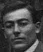

Азнаурян Вартан

Азнаурьян Вартан.Род: Азнауряны (1)
Жена: Азнаурьян Анаида Петросовна
Дочь: Ватулян (Азнаурян) Тамара Вартановна
Дочь: Азнаурян Ася Вартановна
Сын: Азнаурян Захар Вартанович
Сын: Азнаурян Овнан Вартанович
Сын: Азнаурян Арташес Вартанович
Родился.
Женился.
Родилась дочь: Ватулян (Азнаурян) Тамара Вартановна, 24.11.1934.
Родилась дочь: Азнаурян Ася Вартановна.
Родился сын: Азнаурян Захар Вартанович.
Родился сын: Азнаурян Овнан Вартанович.
Родился сын: Азнаурян Арташес Вартанович, 19.09.1938, Батуми.
Умер.
 Семья Азнаурьян: между 1929 и 1930, Артвин. Стоят: Азнаурьян Арменак, супруги Азнаурьян Анаида и Азнаурян Вартан, супруги Азнаурьян Аракси и Азнаурьян Пайлак, супруги Азнаурьян Сирануш и Азнаурьян Григорий (Грач). Семья Азнаурьян: между 1929 и 1930, Артвин. Стоят: Азнаурьян Арменак, супруги Азнаурьян Анаида и Азнаурян Вартан, супруги Азнаурьян Аракси и Азнаурьян Пайлак, супруги Азнаурьян Сирануш и Азнаурьян Григорий (Грач).Во втором ряду стоит Саатчиян Римма. Сидят: Азнаурьян Петрос и Азнаурьян Искуи, Саатчиян Вардануш и Саатчиян Погос. Сидят внизу: Саатчиян Никита, Азнаурьян Яков, Саатчан Мария, Саатчан Артавазд и Саатчан Манук. |